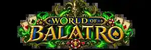
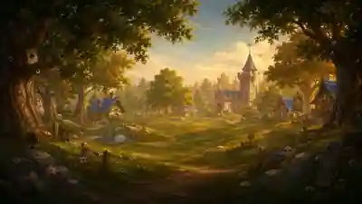
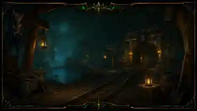
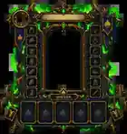
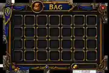

13 playable classes
Warrior, Paladin, Hunter, Rogue, Priest, Death Knight, Shaman, Mage, Warlock, Monk, Druid, Demon Hunter, and Evoker, each with class abilities, resources, specs, and themed loot.

A Balatro RPG overhaul by Nothatcher
Turn a Balatro run into an Azeroth-style adventure with persistent characters, 13 classes, equipment, RPG stats, campaigns, dungeons, world-event Tags, an Auction House, class abilities, and a full Warcraft-inspired interface.
More than a card pack
World of Balatro adds a character-driven progression layer on top of Balatro. Build a class, collect equipment, improve stats, manage your bag and action bar, fight named encounters, visit the Auction House, and push through campaign zones before entering tougher dungeon and Mythic-style content.
Warrior, Paladin, Hunter, Rogue, Priest, Death Knight, Shaman, Mage, Warlock, Monk, Druid, Demon Hunter, and Evoker, each with class abilities, resources, specs, and themed loot.
Create up to six characters. Each keeps its own run, equipment, action-bar shortcuts, campaign progress, and character-specific progression.
Fourteen armor slots, weapons, rings, trinkets, item levels, rarities, set pieces, boss drops, and stats that directly change scoring and encounter difficulty.
Character paper doll, 28-slot bag, spell book, action bar, custom tutorial, class-select screens, zone backgrounds, and Warcraft-inspired UI art.
Adventure campaign
The opening campaign advances through themed chapters with their own backgrounds, encounter flavor, bosses, loot, and progression. Elwynn Forest leads into Westfall and then the Deadmines, where Edwin VanCleef closes out the first campaign arc.


Core systems
Strength, Agility, Intellect, Stamina, Critical Strike, Haste, Mastery, and Versatility all have gameplay effects.
Choose specializations and grow through multi-tier talent progression as your run develops.
Rage, Holy Power, Focus, Combo Points, Insanity, Runic Power, Maelstrom, Soul Shards, Chi, Fury, Essence, and more.
Trigger special encounters through Tags, including the Auction House, treasure chests, merchants, rare patrols, Darkmoon events, and lost adventurers.
Browse discovered items by category or search, view undiscovered items greyed out, buy at rarity-based market prices, and list your own gear at custom asking prices.
Named mobs, rare encounters, bosses, class gear, recognizable themed drops, Heroic fights, affixes, raids, and Mythic+ continuation.


Character management
The normal Balatro playfield stays clean while your RPG systems live in dedicated interfaces. Equip armor and weapons in Character, keep consumables in your Bag, and drag shortcuts to a persistent ten-slot action bar.
The guided first-run tutorial introduces these systems in order and can be skipped at any time.
Installation
Install a compatible Balatro + Steamodded setup.
Download the latest World of Balatro release.
Place the entire AzerothBalatro folder in your Steamodded Mods directory.
Keep main.lua, src, assets, and azeroth_balatro.json together.
AzerothBalatro so existing World of Balatro saves and registered content remain compatible.Current target
The mod is actively developed and tested on the Android Balatro mod stack as well as Steamodded-compatible setups. Large-number/Talisman-style compatibility is handled where possible.